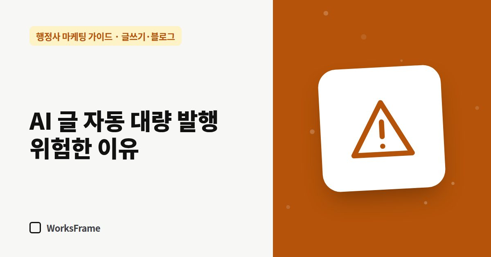

글쓰기·블로그
AI 글 자동 대량 발행, 행정사 사이트엔 위험한 이유
한 줄 답
검토 없이 하루 수십 편씩 올린 AI 글은 구글·네이버에서 낮게 평가받을 수 있습니다. 하루 1편 이내로, 사람이 확인한 글만 올리세요.

“AI가 하루 30편씩 자동으로 올려 드립니다.” 솔깃한 제안이지만, 행정사 사이트에는 특히 위험합니다. 이유는 두 가지입니다. 검색엔진이 싫어하고, 고객도 속을 수 있기 때문입니다.
검색엔진은 ‘양’이 아니라 ‘가치’를 봅니다
구글은 검색 순위를 조작할 목적으로 가치 없는 페이지를 대량으로 만드는 것을 스팸 정책의 “대량 생성 콘텐츠 악용”으로 다룹니다. AI를 썼는지가 아니라, 대량으로 찍어냈고 도움이 되지 않는지가 기준입니다.
한 분석 글에 따르면 2026년 3월 구글 코어 업데이트 이후 다음 유형의 사이트들이 트래픽을 크게(30~80%) 잃었습니다.
- 하루 수십~수백 편을 편집 없이 올린 AI 발행 사이트
- 키워드만 바꾼 템플릿 페이지를 대량으로 만든 사이트
- 직접 경험 없이 쓴 리뷰 사이트
반대로 전문가가 검토·수정한 AI 초안, 원래 속도의 몇 배 이내로 늘린 발행은 영향이 적었다고 정리합니다.
행정사 글이 특히 위험한 이유
- 틀린 안내 = 고객 손해 — 기한이나 서류를 잘못 안내한 글이 사무소 이름으로 남습니다
- 업무 범위 문제 — AI가 행정사 업무 범위를 넘는 표현을 쓸 수 있습니다
- 신뢰 손실 — 비슷비슷한 글이 가득한 사이트는 고객 눈에도 성의 없어 보입니다
대안: 적게, 확인해서, 꾸준히
| 자동 대량 발행 | 권하는 방식 |
|---|---|
| 하루 수십 편 | 하루 1편 이내 |
| 사람 검수 없음 | 행정사 확인 후 게시 |
| 키워드만 바꾼 글 | 업무·상황마다 다른 내용 |
| 출처 없음 | 기준 날짜와 관계 기관 링크 |
이미 자동 발행을 하고 있다면
- 자동 발행 중지
- 방문이 거의 없는 글, 중복 글 정리
- 남길 글은 최신 기준으로 고치고 날짜 표기
- 이후 하루 1편 이내, 확인한 글만
출처: Digital Applied — Scaled content abuse, Google March 2026 update
자주 묻는 질문
AI를 아예 쓰지 말아야 하나요?
아닙니다. 초안과 정리에 쓰면 시간을 크게 아낄 수 있습니다. 문제는 검수 없는 대량 발행입니다.
몇 편까지 괜찮은가요?
정해진 숫자는 없습니다. 기준은 “한 편 한 편이 읽는 사람에게 도움이 되는가”와 “사람이 확인했는가”입니다.